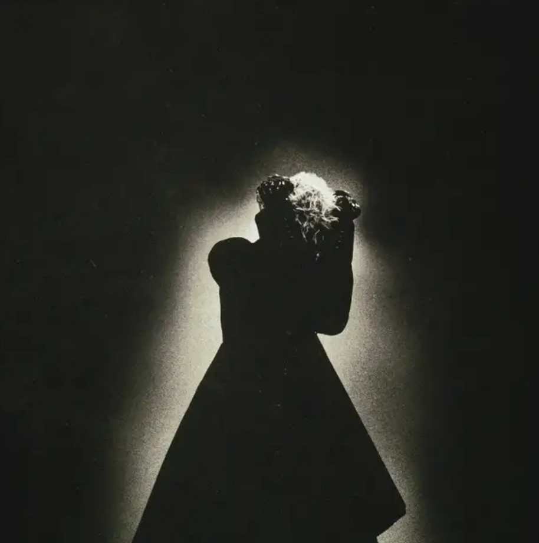
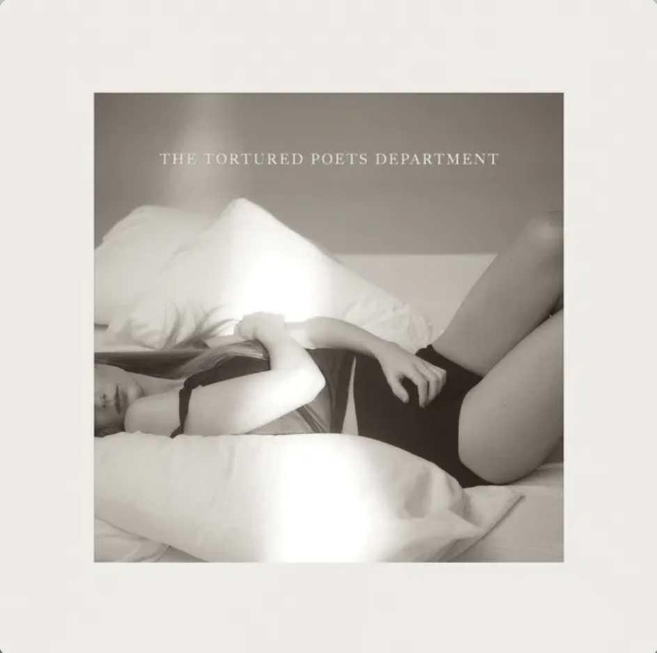
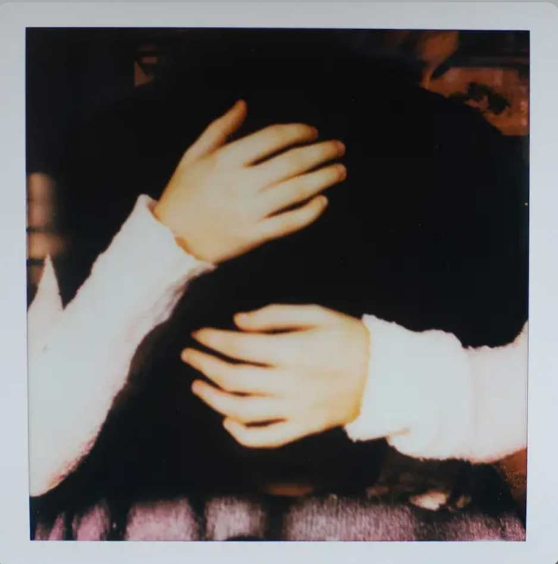
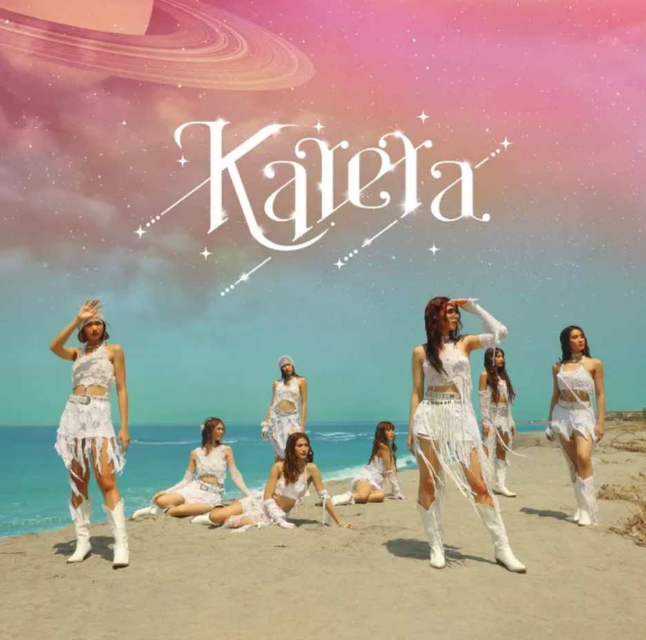
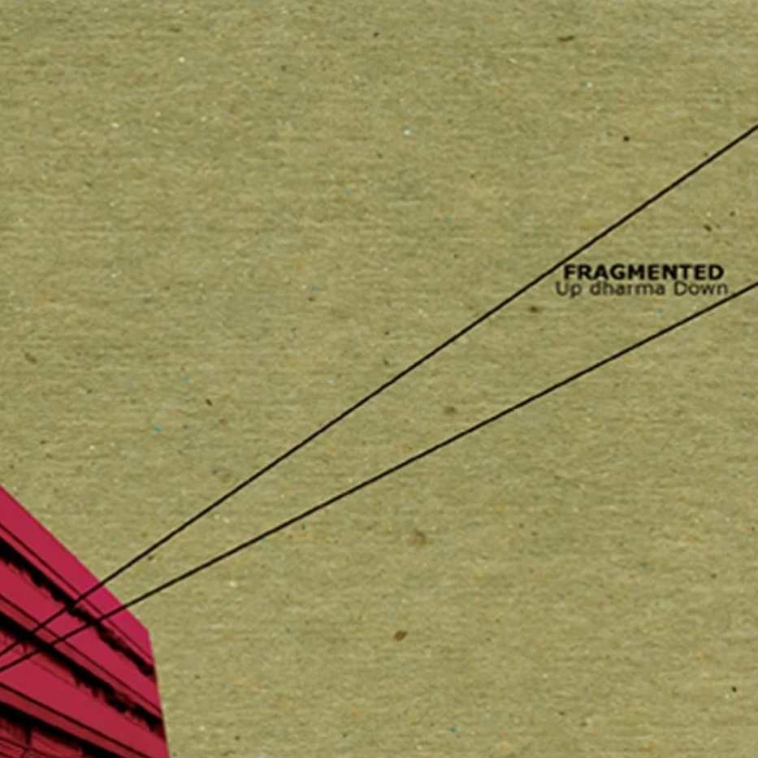
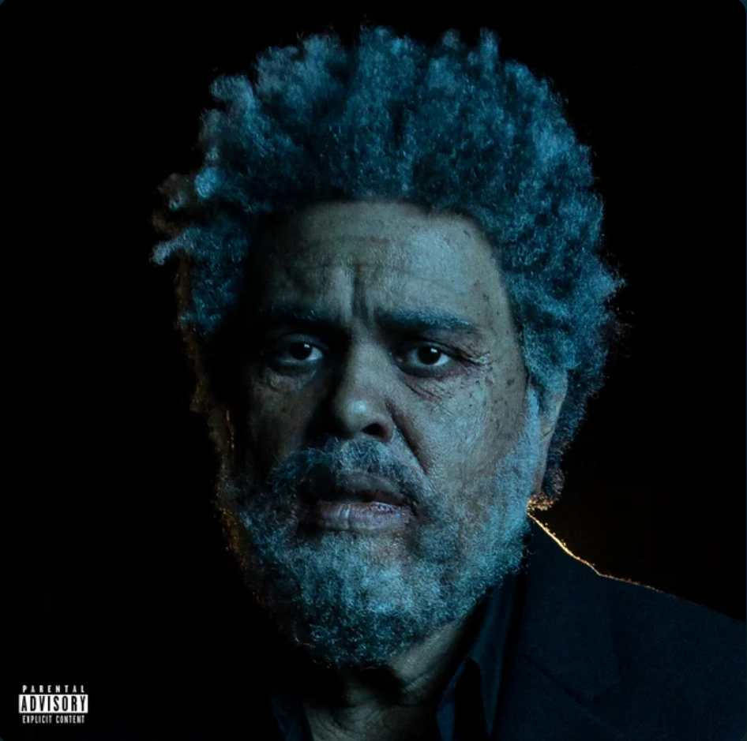
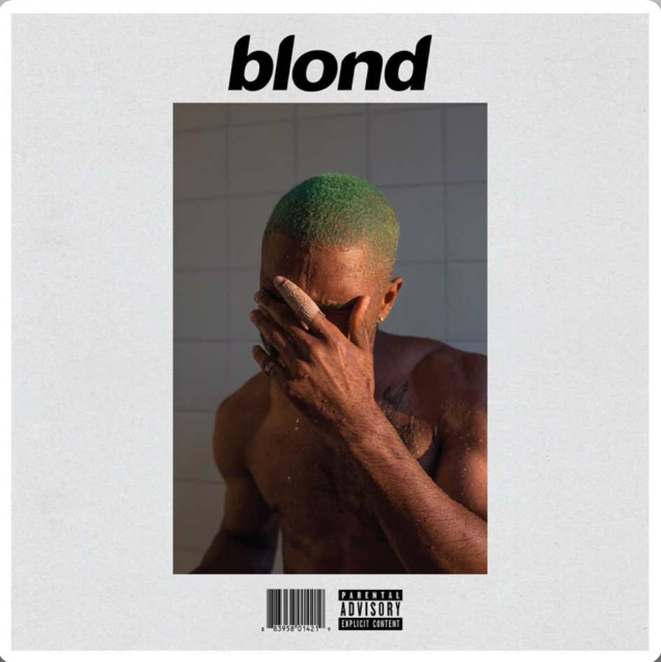

Bags
Clairo
"Bags" by Clairo, inspired by her first romantic experiences with a girl, is a nervous love ballad about navigating the uncertainty of unrequited feelings and the awkwardness of potentially crossing the line between friendship and something more.
The World is Ugly
My Chemical Romance
The World is Ugly" by My Chemical Romance is a song about the harsh realities of the world, but ultimately emphasizes the beauty and value of the listener, even amidst the ugliness
No.1 Party Anthem
Arctic Monkeys
"No. 1 Party Anthem" by Arctic Monkeys is about a singer's experience at a party, finding himself feeling alone despite being surrounded by people, and the brief encounter with a girl who initially seems interesting, but quickly loses his interest when he learns she's with someone else.
Soft Spot
Keshi
"Soft Spot" by keshi is about being deeply infatuated with someone, willing to make exceptions and step outside one's comfort zone for that special person, conveying vulnerability and longing despite reservations about love and relationships.
Fortnight
Taylor Swift
Fortnight," a song by Taylor Swift featuring Post Malone, explores the aftermath of a short-lived, intense relationship, with lyrics suggesting a dramatic, tragic take on love and loss, where the narrator grapples with the lingering effects of a brief but impactful connection.
we hug now
Sydney Rose
"We Hug Now" by Sydney Rose is a song about nostalgia and the lingering impact of a past relationship, where the singer reflects on a time when they hugged, a gesture that was unusual for them, and the continued impact of that person on their life.
Karera
BINI
"Karera" by Filipino girl group BINI is a song exploring mental health, promoting self-care, and encouraging listeners to resist societal pressures, drawing on the personal experiences of member Nica Del Rosario who has Generalized Anxiety Disorder.
Multo
Cup of Joe
"Multo" by the Filipino pop-rock band Cup of Joe is a song that explores the lingering feelings and memories of a past relationship, focusing on the "ghosts of our past" and the search for clarity amidst the ruins of a failed relationship.
Oo
Up Dharma Down
"OO" by Up Dharma Down is a song that explores the complexities of love and relationships. The lyrics express the confusion and uncertainty that often accompany romantic feelings, as well as the fear of giving in to them.
La La Lost You
NIKI
In “La La Lost You,” NIKI describes a significant other who left her behind in Los Angeles, or LA, for New York. The title is a play on words, telling her significant other that they lost themselves in their new city.The music is mellow as her lyrics convey her bitterness toward her lover for leaving her and the place where they built their relationship.
Is There Someone Else?
The Weeknd
"Is There Someone Else?" by The Weeknd, from his "Dawn FM" album, is a poignant exploration of relationship anxieties and the creeping paranoia that accompanies suspected infidelity. The song immerses the listener in the narrator's internal struggle, as they grapple with the unsettling feeling that their partner's affections may be divided. It captures the raw vulnerability of questioning trust, and the emotional turmoil that arises when doubt begins to erode the foundation of a relationship.
White Ferrari
Frank Ocean
Frank Ocean's "White Ferrari," a centerpiece of his "Blonde" album, is a profoundly introspective and emotionally charged exploration of love, loss, and the ephemeral nature of human connection. The song navigates the delicate terrain of past relationships, capturing the bittersweet ache of nostalgia and the lingering pain of disconnection. Ocean's lyrical tapestry weaves in existential reflections, contemplating the vastness of existence and the search for meaning within it.
